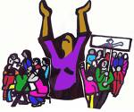

پذيرش > تریبون > مقالات > هشت مارس : مبارزه برای هم تغییرات کوچک، هم تغییرات بزرگ / نادرساده


 هشت مارس : مبارزه برای هم تغییرات کوچک، هم تغییرات بزرگ / نادرساده هشت مارس : مبارزه برای هم تغییرات کوچک، هم تغییرات بزرگ / نادرساده
16 اسفند 1388 - - نسخه قابل چاپ
مقاومت و اعتراض خیابانی
تغییر برای برابری - زنان درجنبش اعتراضی و عمومی ماههای اخیر حضور چشمگیروبرجسته ای داشتند. برخی رسانه ها ی فارسی و غیر فارسی برای توصیف وضعیت جامعه ایران و ارزیابی ازکشاکش های سیاسی عبارتی نظیر" سیمای زنانه ی انقلاب ایران " یا " انقلاب زنانه ی ایران*(1) "را بکاربردند.
بویژه واقعه ی قتل ندا آقا سلطان، زن جوانی را بعنوان سمبل مقاومت واعتراض در ایران به افکار عمومی شناساند. این اولین بار نیست که زنی سمبل مقاومت واعتراض دریک کشورمی شود. ازانقلاب فرانسه(1789) تا امروز نمونه های مشابه و ماندگار سمبلیک وجود داشته است و تلاش برخی ژورنالیست ها دراین شبیه سازی برای درک اوضاع بحرانی و انتقال گزارشات ایران به مخاطبین که تجربیات تاریخی بسیاری ار نقش زنان در انقلابات پیشین دارند درماههای گذشته قابل فهم است .
زاویه ی نگاهها درمسائل سیاسی اجتماعی درسطح بین المللی بدلیل منافع وبینش ها، اما متفاوت است ، بطورکلی درحالیکه درکمپ راست ؛ گرایش محافظه کارهمه تلاش خود را بکارمی برد تا اثبات کند " طبقه ی متوسط " ایران تنها طبقه ی ناراضی، طرفداران غرب ومخالف حاکمیت اسلامی است درحالیکه بسیاری یا متاثراز ارزیابی های راست به حمایت ازسرکوبگری حاکم پرداخته و یا بسیاری دیگر با تاثیرازاینگونه تحلیل ها منفعل گردیده و یا به زیکراک زدن ادامه دادند، درکمپ نیروهای چپ وسوسیالیست و انقلابی نیزارزیابی های یکسانی وجود نداشت ) صرفنظراز برخی ارزیابی ها ی مغشوش و کلیشه ای ( و تا جایی که به مقوله های تحلیلی بر می گردد، روشن است کارپایه ی ارزیابی نیروهای سوسیالیست باید مبتنی بر ارزیابی ازمبارزات طبقاتی – اجتماعی قرار داشته باشد و دقیقا از این زاویه نیز هست که پرداختن به نقش زنان و کیفیت مشارکت گسترده ی زنان در این اعتراضات بار دیگراهمیت فوری می یابد.
بدین ترتیب اهمیت ژورنالیستی وارد کردن ترم هایی نظیر" انقلاب زنانه در ایران" در ارزیابی اوضاع داخلی ایران مسئله ای فرعی است اما بدلیل بارواهمیت سیاسی اجتماعی جنبش زنان، بویژه درشرایط بحرانی که یکباردیگروزن کشی اجتماعی، نقش طبقه کارگردراین اعتراضات ورابطه لایه های مختلف جنبش های اجتماعی درایران را به پرسش می کشد واستراتژی های گوناگون مطرح می شود قابل تعمق ونقد است .
به گمان من این اعتراضات عموما درمقوله ی جنبش وکنشگری اجتماعی قابل ارزیابی است و نه ابتدا به ساکن در حیطه ی مقولاتی نظیر قیام و سرنگونی و زنان گرچه دراعتراضات خیابانی وزن و نقش مهمی بر عهده داشتند اما حضورزنان در اعتراضات خیابانی به تنهایی نه می تواند ملاک واقعی ارزیابی از موقعیت کنونی و نه می تواند ملاک ارزیابی از موقعیت زنان وجنبش زنان درکل جامعه قرارگیرد. اعتراضات خیابانی که زنان نیزدرآن مشارکت داشتند اتفاقا اینبار حرکتی بشدت سیاسی بود، همه مسئله اما این است که این حرکت درقالب حرکات اعتراضی و سلسله حرکات اجتماعی درست ارزیابی شود. چرا که هر ارزیابی درست وواقعی لازمه ی فعالیت انقلابی است و کسی نمی تواند با نادیده انگاشتن هر لایه اجتماعی شرکت کننده در این اعتراضات یا اغراق* (2) در ارزیابی ازلایه ا ی دیگر مدعی دست یافتن به استراتژی صحیح برای رسیدن به پیروزی شود.
میدانیم که حجم مطالبات انباشته شده و سرکوب شده ی زنان و تداوم حاکمیت اسلامی ازسویی و مقاومت زنان وروشنگری برابری طلبانه درسطح جامعه، گرایشات سیاسی ایران را نیز بتدریج بسمت بازبینی در نگرشهای مرد و پدرسالارانه ی حاکم سوق داده و امروزه توجه به مطالبات زنان در بین گرایشات و سازمانها و احزاب بیشتر از هر زمان به چشم می خورد.
مبارزه بر سر خواستهای زنان یعنی حمایت ازبسیج و متشکل شدن زنان برای تحقق خواستها و ارتقاء آگاهی عمومی جامعه است . اینکه یک نیروی چپ و سوسیالیست مدعی شود ما از هر گونه تغییرجزیی حتی تغییرات حقوقی وفرهنگی به نفع زنان حمایت می کنیم اما مسئله ی زنان تنها با سرنگونی این رژیم و یا رفع تبعیض طبقاتی در جامعه کمونیستی حل می شود، بخودی خود بمعنای حل معضل عمل مبارزاتی روز جامعه ایران نیست. رژیم مذهبی ، سرکوبگر و آپارتاید جنسی البته عامل اصلی تداوم فرودستی زنان است و اعتراض زنان نیز وجود دلرد اما اینکه کدام حلقه ها امروز را به آینده وصل می کند بسیار مهم است .
بنابراین بحث برسراینکه "خواستهای زنان " ایران چیست ؟ متشکل شدن زنان چه فرم هایی دارد ؟ ورابطه ی جنبش چپ ، سوسیالیستها و جنبش کارگری با جنبش های اجتماعی و بویژه جنبش زنان کدام است ؟ سوالهای فراوانی باز ومطرح است. بنابراین صرف اعلام یک پلاتفرم وفورمولبندی خواستهای زنان که قراراست بعداز سرنگونی این رژیم با چند فرمان به اجرا درآید، پاسخ همه مسائل کنونی نیست.
مسئله زن و همچنین جنبش زنان همواره متاثرازتحولات و کارکردهای سیاسی بوده وخواهد بود. دقیقا بهمین دلیل نیزهست که الیت جامعه در گروهبندیهای گوناگون، همواره تلاش داشته با گرایش سیاسی خود از مطالبات زنان تعریف دهد و از این راه جنبش زنان را هم پیمان خود گرداند . تا اینجا نه می تواند ایراد به فعالین جنبش زنان باشد که چرا نهاد و تشکل خود را یک نهاد سیاسی تعریف نکرده اید یا ازگرایشات سیاسی درون جامعه تاثیر نپذیرید یا بپذیرید و نه می تواند ایراد به گرایشات سیاسی گوناگون باشد که چرا با گرایش خود ازمطالبات زنان سخن می رانید . تمام مسئله اما این است که اولا داشتن پلاتفرم با تلاش برای تحمیل یک تعریف موقعیتی ازجنبش زنان وتعمیم آن به کل جنبش زنان فرق دارد.
اصالت جنبش 8 مارس
اصالت 8 مارس ازدامن زدن به گفتمان انتقادی فمینیستی همراه پراتیک پیگیربرای سازماندهی توده ای زنان حول خواستهای جزئی و کلی و از همه مهمترنقد روابط و مناسبات نابرابر حاکم بر جامعه منشاء می گیرد و نیازی به گفتن نیست که همواره نیروی چپ و سوسیالیست خودش را با این جنبش بازشناخته است.
درجامعه ی استبداد زده ی ما هر گام در ایجاد تشکل یابی با مشارکت مستقیم کنش گران فعال در جنبش های اجتماعی خود گامی درحمله به دژهای استبداد است و باید دستکم مورد حمایت نیروهای سوسیالیست قرارگیرد و درصورت امکان حتی درگسترش آن گامهای عملی برداشته شود. طبیعی است گفتمان انتقادی وبرابری طلبانه، نه در دنیای مجازی، بلکه درعمل مستقیم و تاثیر گذاری متقابل شانس پویایی دارد. همانگونه که برتری و تاثیرگذاری هرگرایشی بر جامعه تابعی از برتری مادی نیروهای اجتماعی درگیردرعرصه اجتماعی است که جهت سیاسی آینده را می تواند رقم زند.
در ایران، گفتمان رفرمیستی و روایت های لیبرالی* (3) ازحقوق زنان تاکنون افق و چشم اندازی جزتلاش برای تصحیح نیم بند قوانین حاکم، قادربه تصویردیگری از خود و آینده نبوده است، دوره برتری و راندمان اجتماعی اش را به محک گذارده و امتحانش را پس داده وامکانات ومحدویت های خود را شناسانده است . نیروی چپ در جنبش زنان ایران باید همچنان به نقد این گرایش ادامه دهد، اما نقد گرایشات دیگر بخودی خود منشاء هویت اثباتی و تقویت گرایش اجتماعی چپ در بدنه ی جامعه نمی گردد.
بعبارتی نیروی چپ انقلابی نمی تواند، طولانی شدن دوره ی سرکوب و از طرف دیگر پیدایی دوران موسوم به " دوران اصلاحات " و رشد گرایش و روایت های لیبرالی از حقوق زنان را همواره بهانه ای برای رفع تکلیف عملی در مقابل جنبش اجتماعی زنان قراردهد. نابرابری های موجود زمینه ی بروز انواع گرایشات است، نقد گرایشات اما بمعنای پایان زمینه های بقای نابرابریهای حقوقی و فرهنگی نیست و چپ انقلابی که منافع عمومی زنان را باید مد نظر داشته باشد نمی تواند " مبارزه برای تغییرات جزیی " را اساسا معادل رفرمیسم قلمداد نموده و
از پیوند این " مطالبات جزئی " با سایر مطالبات اساسی سر باززند و یا اینکه فقط با ملاک و معیار یک اپوزیسیون برانداز هر حرکت جنبشی را ارزیابی نماید.
اگر می پذیریم نمی توان مسئله زنان را بدون پیوند با اشکال دیگر ستم منجمله تبعیض قومی و نژادی و طبقاتی درک کرد، باید با درک یکسویه و دکماتیستی ازمبارزه ی طبقاتی که دوره ای طولانی نیز بنام چپ ها اشاعه می یافت و چنین القاء می کرد که پرداختن به مسائل طبقاتی ارج ترازمسائل وخواستهای "بورژوائی" زنان است تصفیه حساب نمود. در عین حال پرداختن به مسائل فرهنگی جدا ازمبارزه با باورهای فرهنگی ومذهبی که بخشی ازسامانانه ی مردسالاروستم کاربرعلیه زنان است جدا نیست ، درگذشته اگر نیروی چپ به بهانه ی احترام به باورهای مردم از وارد شدن به مسائل فرهنگی سربازمی زد و عملا به باورهای سنتی و تبعیض آمیز احترام می گذاشت ، اینبار هم نباید پرداختن به مسائل فرهنگی و مبارزه با باورهای سنتی را به صرف اینکه روایت های لیبرالی نیز در همین محدود ه ها فعالیت می کنند ، فعالیتی نامربوط به جنبش چپ تلقی کند .
شناخت ازدرهم تنیده گی مسئله زنان درایران با سایر مسائل سیاسی – اجتماعی وبویژه طبقاتی اتقاقا بستررشد گرایش انتقادی چپ انقلابی نیزمی تواند باشد. چرا که شکاف بی رحمانه ی میان فقر وثروت و ارزانی و بیکاری نیروی کارزنان بهمراه همه تضیقات حقوقی و فرهنگی و فردی و اجتماعی بر علیه اکثریت زنان جامعه ما چنان عریان است که سلاح نقد دردست این گرایش را مدام پالایش واستدلال رفرمیستی را هرروز سست تر می کند.
اما این زمینه عینی که زمینه برتری نظری گرایش چپ و سوسیالیست دخالتگردرسطح الیت و لایه ی روشنفکری کنشگر جامعه نیز می تواند باشد، تنها شرط لازم ونه کافی در پیشروی وکشاکش های لازم بر سر انتخاب درست راه و هموارکردن باوربه ضرورت تحولات اساسی در جامعه است.
البته که داشتن استراتژی سیاسی و پلاتفرم مطالباتی و خواستها نیزجزء ملزومات است، اما همه ی کارووظیفه به اینجا ختم نمی شود. بلکه مسئله اصلی ومحوری، یافتن راه های همبستگی و بسیج توده های وسیع زنان است. جنبش اجتماعی زنان در ایران که بطورکلی مورد حمایت همه گرایشات چپ است، اصولا باید جنبش تشکل های زنان بهم پیوسته ومرتبط نیز باشد. کلی بافی و صدوررهنمود درباره ی ایجاد تشکل های مستقل بخودی خودحلال همه مشکلات نیست . باید از تشکل مستقل همچنان دفاع کرد اما بدون توضیح چند وچون آن وراه های ایجاد آن همچنان دیدگاه سازمانیابی معطوف به تشکل مستقل ناروشن و بحث برانگیز باقی خواهد ماند.
درکشورما که تحت حاکمیت استبداد سرمایه ی اسلامی هم تشکل یابی مستقل ( در اینجا مستقل از دولت ) با موانع روبروست و هم سرکوب شدید گسترده است و هم آزادی تحزب حداقل درمحدوده ی مدل دمکراسی پارلمانی وجود ندارد ، تلاش برای تقویت پایه ی اجتماعی بدون مرورتجربه زمینی ازکارسیاسی وتوده ای درداخل جامعه ی ایران ودوری جستن ازذهنی گرایی ضرورت تام دارد.
ما ایرانیان در خارج از کشورگاهی ناخودآگاه فراموش می کنیم که سالهاست که درون جامعه ایران دیگر زندگی نمی کنیم وگاهی هرتحول و رابطه ی پیرامونی مان را به جامعه ی ایران بسط می دهیم . درخارج از کشورالبته تشکلات متعدد زنان حتی نوعا با گرایشات چپ یا سکولار وجود دارند اما صرف وجود این همه تشکل که فی نفسه گامی در تمرین خودسازمانیابی زنان است، بخودی خود معرف گرایشات موجود برآمده از جامعه ایران درقامت متشکل آن نیست ونمی تواند خلاء تشکل یابی درون جامعه ایران را پرنماید.
این تشکل ها حتی معرف گرایشی خاص از شاخه های فمینیستی شناخته شده در سطح جهان نیستند . هر چند در اثر تماس فرهنگی تاثیرات متقابل گرایش شاخه های متفاوت فمینیستی در این تشکلات مشاهده می شود . بنابراین جابجایی جامعه ی ایرانیان در تبعید با جامعه ی ایرانی درداخل کشورکه پیوندهای طبیعی اش را حفظ کرده خطاست. البته که این دو بهم مربوطند اما خطاست هرآینه فراموش شود درجامعه ایران نیمی ازمیلیونها توده کارگر وزحمتکش را زنانی تشکیل می دهند که منکوب روابط مردسالارانه اند وتوانایی دفاع ازخود، ازایشان سلب شده است وفاقد هر تشکل حتی ابتدایی ترین آن بشکل گروه های همیاری هستند.
آگاهی نسبی این توده ی زنان ازمظالم جامعه مردسالار و ستم روا ی طبقاتی وبسیج آنان شرط لازمه ی هر تحول انقلابی است. انقلابی که مشروط به آگاهی نیروی کارو ترک خوردن باورهای مرد سالارانه در صفوف طبقه کارگرنیز هست وصد البته روشنفکران و دگراندیشان و دانشجویان اعم از زن ومرد نیزدربه چالش کشیدن نهادهای قدرت و نقد سامانه ها وروابط سلسله مراتبی تبعیض آمیز دارای نقش موثری هستند .
بنابراین زمان آن فرارسیده است که گرایش سوسیالیست و چپ نیزبا روایت اصیل خود ملهم از جنبش 8 مارس وارد کشاکش های سیاسی جامعه شود. امری که الزاما خودبازبینی ونقد درون جنبشی و پالایش تصورات ونقد انگاره های غلط بنام جنبش چپ وسوسیالیستی در قبال جنبش زنان لازمه ی انکار ناپذیرچنین گامی است .
بعلاوه تلاش برای یافتن زمینه های همپیوندی با مطالبات مشترک فی مابین لایه های مختلف درون جنبش زنان از یکسو و همپیوندی فی مابین میان فعالین جنبش های اجتماعی – طبقاتی درون جامعه از سویی دیگربرای فراروئی به مرحله ی تجدید قوا و تجدید آرایش صف آرائی ضروری است . بی تردید فعالیت در زیرساخت های چنین امری اگرامروزبدلیل سرکوب واختناق شدید نتواند نمود آشکاری داشته باشد، دربرآمدهای انقلابی به ثمرنشسته و نیروی اجتماعی عظیمی را آزاد خواهد کرد.
درایران هیچ خواست حق طلبانه ی مردمی، نمی تواند با برچسب "خواستهای جزیی" تنزل داده و تحقیرشود! طبیعی است همه فعالین اجتماعی نه فقط به دلیل اختناق بلکه بدلیل بعضا گرایش اجتماعی تنها در محدوده هایی خواستها و مطالبات خود را مطرح وبرای آن مبارزه می کنند . درجامعه ی استبداد زده حتی گرایش رادیکال دردوران آرامش سیاسی ناچاربه امکان گرائی منطبق بر مکانیسم مبارزه ی توده ای است . امری که در برآمد های سیاسی تغییر خواهد کرد و این محدویت امکانات درهم خواهد شکست.
بجای تلاش برای رادیکالیزه کردن مصنوعی مطالبات واقعی جنبش اجتماعی در هر زمان و شرایط و یا بجای تحقیرمطالبات دیگرفعالین جنبش هر نیروی مدعی باید مطالبات رادیکال خودش را که برگرفته از نقد ی ریشه ای به روابط موجود است را درمعرض قضاوت و پراتیک اجتماعی قراردهد و نه فقط در تبلیغات بلکه در عمل حقانیت خود را به اثبات برساند.
8 مارس روززن، روزی تاریخی – جهانی در اعلام مطالبات برابری طلبانه وروزاعتراض به نابرابری های موجود درجامعه است. نابرابریهایی که اساس وریشه آن مناسبات طبقاتی – جنسیتی وروابط نابرابرتبعیض آمیزمیان آحاد جامعه است وتازمانیکه نابرابری های اقتصادی، اجتماعی، سیاسی، فرهنگی؛ حقوقی و شهروندی و تبعیضات جنسیتی در جوامع برافکنده نشده است، جنبش برابری طلبانه که آزادی واقعی زنان یکی از آماج اصلی اش می باشد بر علیه این شرایط خواهد شورید و درمبارزه ای پیگیر به نقد شرایط موجود وبرای رفع موقعیت اسارت بار زنان برخواهد خاست .
سنت جنبش 8 مارس ریشه در این نقد انقلابی دارد. با این نقد میتوان به گسترش و تعمیق مبارزه هم برای تغییرات کوچک و هم تغییرات بزرگ یاری رساند./ 6 مارس 2010
زیرنویس ها :
(1آذرماجدی در مصاحبه با یک دنیای بهترمی گوید : منصورحکمت این عبارت را درسال 2000درسمینارآیا کمونیسم درایران پیروزمی شود درانجمن مارکس لندن استفاده کرد ، منصورحکمت در آن کنفرانس کمی در این رابطه توضیح داد. آذرماجدی سپس تعبیرخودش را بیان می کند.
آذرماجدی می گوید منصورحکمت "کمی" در باره ی این لفظ توضیح دارد . و من می گویم راست می گوید و منصورحکمت فقط در یک جمله گفت : "نصف جامعه زنان هستند و نصف این نصف طرفداربرابریند و میتونه انقلابی که می کنند انقلابی زنانه باشد"
یادآوری من : این تمام حرفی است که منصورحکمت در باره انقلاب زنانه برزبان آورده است . اما آنچه که آذرماجدی نمی گوید و یا درنظر نمی گیرد این است که منصور حکمت بیش از یکساعت در باره ی شرایط پیروزی کمونیسم در ایران بخوان پیروزی کمونیسم کارگری که می تواند نامش حزب کمونیست کارگری باشد یا هر اسم دیگری هم داشته باشد صحبت کرد و در این سمینارگفت جمهوری اسلامی بحران آخر را دارد واینکه چه کسی سر کار می آید بجز2 جریان بورژوایی که اصلاح طلبان و سلطنت طلبان هستند ، ما هستیم که بعنوان کمونیسم کارگری که برای گرفتن قدرت از همه بیشترشانس داریم . چه انقلاب شود چه انتخابات برگزار شود !؟ دو رکن اصلی نقطه قوت ما نیز مبارزه با مذهب و آزادی زن است و اگرپلاتفرمی داشته باشیم می توانیم چفت بشیم به گسترش اعتراضات و درحالت دوم هم رای بیاریم و یک اکثریت عظیم را با خود داریم و در لابلای جملاتش گفت این انقلاب می تواند زنانه باشد.در این سمینار همه تلاش منصور حکمت معطوف به اقناع حاضرین برای گرفتن قدرت است چرا که حزب کمونیسم کارگری را حزب رهبرانقلاب آتی می شناسد .
درست با این تصورات است که حزب کمونیست کارگری به تبعیت از منصور حکمت امروز اعتراضات اخیررا انقلاب زنانه ارزیابی کرده و باورشان شده ، پیش بینی منصورحکمت بوقوع پیوسته و باید برای گرفتن قدرت خیزبردارند. چرا که شرکت زنان دراعتراضات خیابانی اخیر را به شرکت زنان درجنبش سرنگونی ترجمه می کنند بویژه اینکه این زنان گویا بین انتخاب ها کمونیسم کارگری را انتخاب کرده اند و درخدمت رهبری و صدالبته بقدرت رسیدن حزب ایشان هستند.
2) نمونه ی ارزیابی اغراق آمیز را می توان باز هم درجریانات منتسب به طیف کمونیسم کارگری سراغ گرفت. اینها مدعی هستند اکثریت زنان ایران خواهان سرنگونی رژیم و ضد مذهب هستند و با فراخوان این حزب به خیابانها آمدند که انقلاب کنند و رژیم را سرنگون کنند. اینکه این حزب یا هر حزب دیگری تا جایی که خود را سوسیالیست می داند باید مطالبات حداکثری داشته باشد یک موضوع است و اینکه اکثریت زنان نیز این حزب راپذیرفته اند و با فراخوان این حزب به خیابان آمده اند موضوع دیگر است .
3) روایت لیبرالی در وجه غالب به نقد مناسبات تبعیض جنسی درزیر بنای جامعه نمی پردازند و فعالیت فرهنگی و آموزشی و موقعیت شغلی زنان در بازار کار را هدف مبارزه با نابرابری بین زن ومرد در جامعه می شناسد.
ارسال به
بالاترین
،
توییتر
،
فریندفید
،
فیسبوک
در همين بخش :
 دهمین دورۀ مراسم تندیس صدیقه دولت آبادی ۱۳۹۲ دهمین دورۀ مراسم تندیس صدیقه دولت آبادی ۱۳۹۲
کارت پستالهایی به بهانهی هشت مارس و به یاد همهی مبارزین راه برابری
بیانیه بیش از 350 تن از مدافعان حقوق زنان به مناسبت روز جهانی زن؛ زنان هر روز فرودستتر میشوند
لباسی که برای تن ما دوخته اند! /اعظم بهرامی
چالشها و چشمانداز فعالیت مدنی زنان
ديگر بخش ها :
طرح یک میلیون امضا
|
مقالات
|
سایت نوشته ها
|
اخبار
|
گزارش كمپين
|
گفت و گو
|
علیه سکوت
|
كوچه به كوچه
|
نامه های شما
|
گزارش ویژه
|
گفتگو با اعضا
|
ویژه سالگرد کمپین
|
تصویر برابری
|
دل آرام علی
|
تریبون
|
مقالات
|
تاریخ شفاهی
|
خارج از چارچوب
|
کتابخانه
|
درباره کمپین
|
کمپین در شهرها
|
کمپین در بند
|
صدای تغییر
|
ویژه 22 خرداد
|
لایحه حمایت از خانواده
|
گالری
|
عشا مومنی
|
امیر یعقوبعلی
|
خدیجه مقدم
|
راحله عسگری زاده و نسیم خسروی
|
پروین اردلان،جلوه جواهری، مریم حسین خواه، ناهید کشاورز
|
زینب پیغمبرزاده
|
سعیده امین، سارا ایمانیان، محبوبه حسین زاده، ناهید کشاورز و همایون نامی
|
احترام شادفر
|
نسیم سرابندی زاده،فاطمه دهدشتی
|
وبلاگ مهمان
|
پرونده خرم آباد
|
دستگیری ها
|
مریم مالک
|
پرستو اللهیاری
|
مهرنوش اعتمادی
|
سمیه رشیدی
|
Other Languages
|
همراهان
|
«فراخوان کمپین ده روز با بهاره هدایت»
| English
|